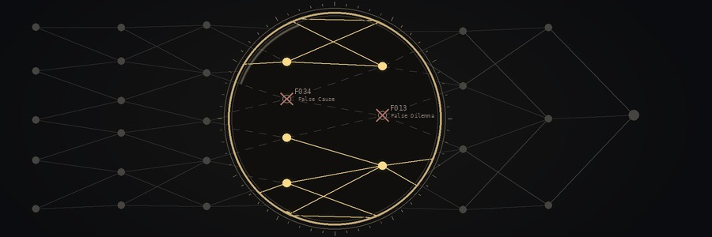

substance_lens
prompt specv0.5.9
What it is
A JSON prompt spec you give a chat model so it checks an argument step by step and scans it for 67 fallacies, on both the claim and its strongest counter-case. Flags are judgments to verify, not proofs.
Runs on: Any capable chat model · a prompt spec, built with Grok in mind; no code ships
Who it's for
Anyone who wants a slower, structured second read of an argument, including their own: a writer checking a draft, a researcher auditing a source, or someone weighing two sides of a contested topic. It isn't a fact-checker, and it isn't an automated grader. Its output is a list of leads for a person to confirm.
How to use it
- Load the spec. Open
substance_lens_0.5.9.jsonand paste the whole file into a new chat, or attach it. - Give it something to check. In the same chat, paste the text and say what you want, for example
run full pipeline on <claim>. - Check what comes back. Each flag should name the side it was found on, the fallacy ID, the quoted span, the check type and the repair. Check every quote against the source yourself. To have the model audit its own answer, reply
lens that response.
It was written with Grok in mind. Any chat model can read the file, but the consistency numbers below come from a single model family.
What it does
The spec gives the model a fixed order of work:
- Define terms first, so a word can't quietly change meaning later.
- Write down the claims, each read in at least two ways.
- Map the argument as a graph of which claims depend on which.
- Fallacy scan. Every inference step is checked against the 67-entry catalog, for the claim and for the strongest good-faith counter-case, with the same effort. A scan that covers only one side has to say so.
- Find conflicts, then resolve or merge what can be reconciled.
- Check against evidence. Branches without outside grounding are cut.
- Reduce to the smallest set of claims that survived, valid only within the premises it started from.
A fallacy flag withdraws support from one step. It does not show the conclusion is false. Repairs must be stated, never made silently.
What it doesn't do
- No code ships. No program here checks arguments. Of the 67 entries, 9 could be decided by code once an argument is in formal shape, 10 have a partial mechanical sub-check, and 48 are judgment only. Every flag is a model's (or a person's) judgment.
- It doesn't fact-check. A flag points to a weak step in the reasoning, not to a false fact.
- It can't enforce itself. Models drift in a long chat, so a person has to check the output.
Measured consistency. The Grokipedia Truth Audit ran the v0.5.9 fallacy scan three times over the same saved snapshots. From run 2 to run 3, 60% of the flagged sentences were flagged again; on the shared sentences, 79% got the same fallacy ID and 97% the same side. All runs used one model family and one framework, so this shows the method is consistent. It does not show the method is correct. Treat each single flag as a lead to check by hand.
Where it's used
- Grokipedia Truth Audit: fallacy scans of 58 circumcision-related Grokipedia articles, and the fallacy and framing pass in the Spinoza article audit.
- Freedom of Necessity: the verse fallacy audit of Axioms of Necessity.
- Neuresthetics Genius Study: blind claim audits of the study's records.
Status
- Version 0.5.9 (October 2026), MIT license.
- Prompt only. No checker code ships, and older versions are kept in
history/. - Misuse example:
examples/misuse/TRUE_HEIRS.mdshows the fiction module run on contested non-fiction and its output then called verified. That breaks the spec's own rules. It's kept as a warning that polish isn't evidence.